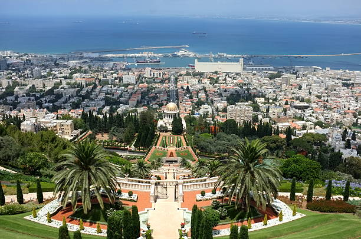

מבט מהגנים הבהאיים
מידע על העיר חיפה
- חיפה היא עיר בהר הכרמל, השלישית בגודלה בארץ מבחינת כמות האנשים שגרים בה
- חיפה הוקמה על ידי השליט הבדואי דאהר אל-עומר בשנת 1761
- קיבלה הכרה כעיר בשנת 1834
- בחיפה גרים אוכלוסייה מעורבת עם מיעוט ערבי, ובערך 280,000 אנשים {בנס ציונה יש בערך 50,000 אנשים}
- חיפה ממוקמת בצפון הארץ ומנס ציונה לוקח שעה וחצי נסיעה{בדרך כלל}
- בחיפה יש נמל בו פורקות סחורות וניתן לשוט למדינות אירופה
- בחיפה יש שדה תעופה ופועלת בו חברת התעופה Air Haifa.
- עוד דבר, בחיפה יש טכניון {אוניברסיטה למדעים והנדסה} ואוניברסיטת חיפה ללימודיי מדעי הרוח.
- ושם הוקמה הרכבת תחתית הראשונה בארץ!

מבט מהגנים הבהאיים

בניין הטכניון הישן בחיפה

שרידי הצוללת דקר
בניין הטכניון הישן בהדר